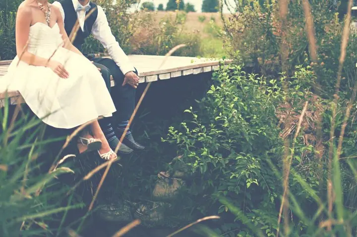
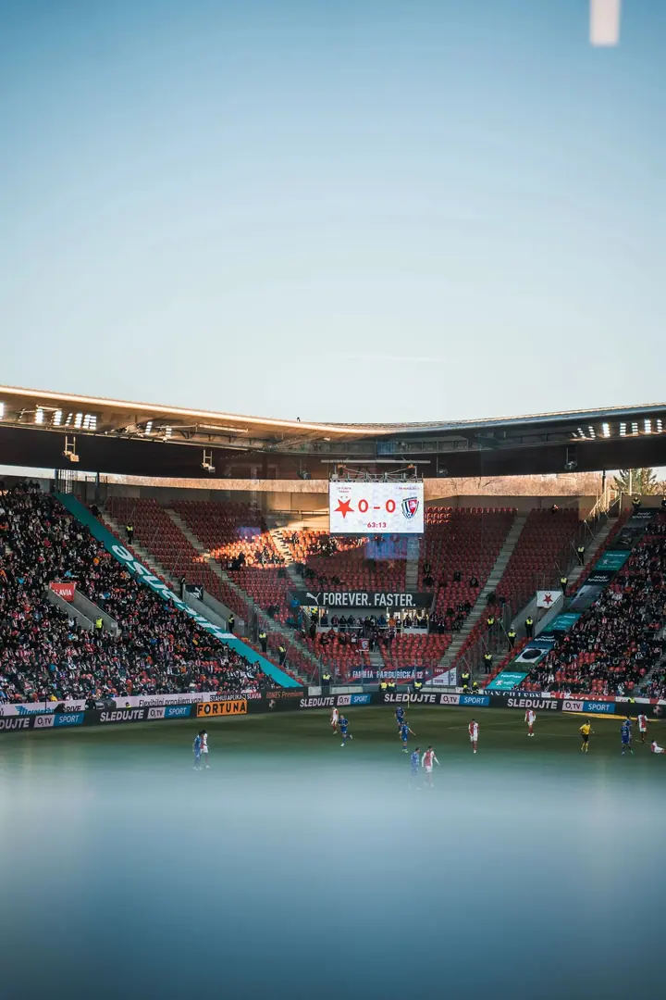
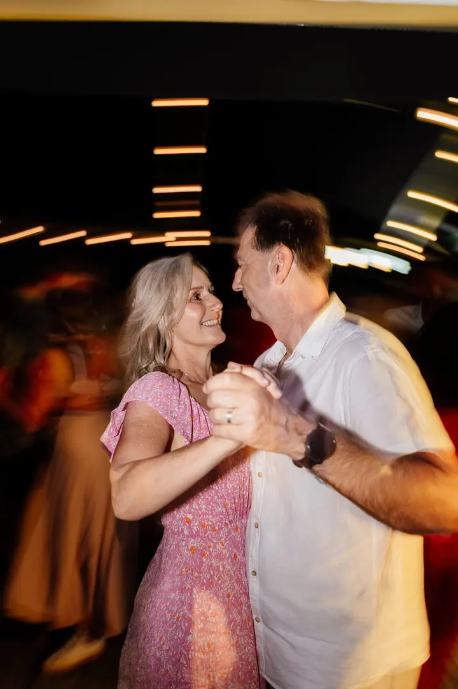
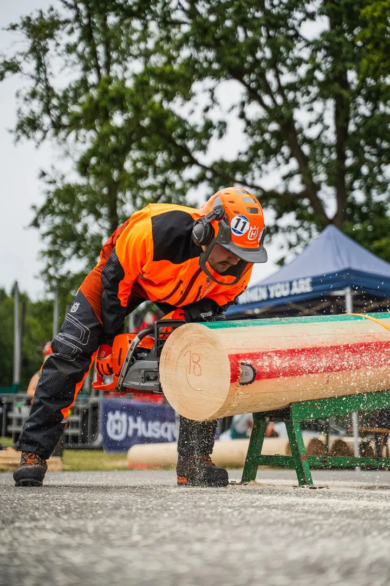
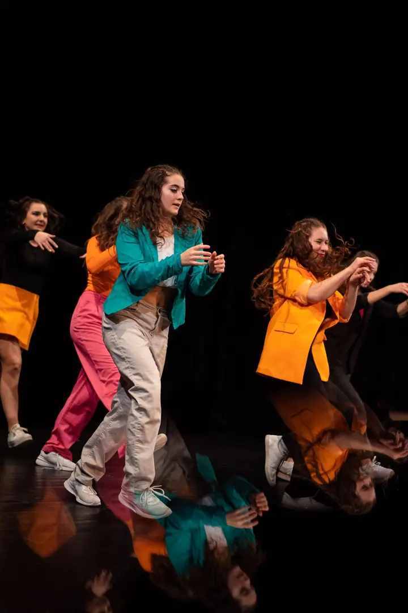

01 / 04
Svatební focení
Celý svatební den od ranních příprav přes obřad až po večerní dění. Kladu důraz na přirozené momenty, emoce a detaily a najdeme i krátkou chvilku jen pro vás dva.
Zeptat se na termín→





Ať vám žádný moment neunikne
Zeptat se na termín →(01) Ahoj
Jmenuji se David Havlíček a fotím i natáčím svatby, ale také plesy, koncerty a firemní akce. Na každou zakázku vyrážím s profesionální výbavou a záložní technikou, a když chcete pohled z nebe, vezmu s sebou i dron.
(02) Co dělám
01 / 04
Celý svatební den od ranních příprav přes obřad až po večerní dění. Kladu důraz na přirozené momenty, emoce a detaily a najdeme i krátkou chvilku jen pro vás dva.
Zeptat se na termín→02 / 04
Natáčím svatby, akce i videa na míru pro vaše podnikání na kamery Sony se stabilizací DJI. Když chcete pohled z nebe, mám dron DJI Mavic 3 se všemi povoleními k leteckým pracím.
Zeptat se na termín→03 / 04
Mám za sebou maturitní plesy, firemní akce i koncerty známých zpěváků. Umím být nenápadný a zachytit atmosféru celé akce.
Zeptat se na termín→Dále nabízím
Pokud chcete podpořit své podnikání svěžím vizuálem, ukážu vaše produkty v co nejlepším světle. Fotky i video připravím podle vašich představ.
↗(04) Postup
Od první zprávy po hotovou galerii.
Krok 1 z 4
Vyplníte krátký formulář s vašimi představami a termínem. Formulář není závaznou objednávkou.
Krok 2 z 4
Osobně se vám ozvu a projdeme spolu každý detail. Pak pevně zarezervujeme váš termín.
Krok 3 z 4
Jsem s vámi od ranních příprav až po večer, s profesionální výbavou i záložní technikou. Najdeme i klidnou chvilku na portréty jen pro vás dva.
Krok 4 z 4
Fotky pečlivě upravím a předám ve formě, na které se předem domluvíme. U celodenního balíčku je máte do 5 pracovních dnů od svatby.

Nenápadně u všeho, co se opravdu stane
(05) Za objektivem
Moje láska k natáčení začala, když jsem ještě na základní škole dostal od strýčka své první GoPro. Focení a natáčení mě nadchlo natolik, že při výběru střední školy bylo technické lyceum v Liberci jasná volba. Tam jsem se naučil pracovat s fotografií, videem a multimédii v propagaci.
Nejvíc mi ale dala praxe. Natáčel jsem maturitní plesy, firemní akce i koncerty známých zpěváků. Dnes se specializuji hlavně na svatby, kde umím být nenápadný, a když je potřeba, i vést, aby vám focení bylo příjemné a přirozené.
Od jedné GoPro kamerky jsem se dostal ke kamerám Sony se stabilizací od DJI a k dronu DJI Mavic 3 se všemi povoleními k leteckým pracím. Fotografie pečlivě upravuji a předávám je rychle, protože vím, jak moc se na ně těšíte.
David
David Havlíček · Svatební fotograf a kameraman
Celodenní focení svatby vychází na 13 000 až 19 000 Kč. V ceně je veškeré vybavení i doprava po celé ČR, žádné skryté poplatky.
Hotové fotografie obdržíte do 5 pracovních dnů od svatby. Na vašem příběhu začínám pracovat hned po svatbě.
Ano, fotím i natáčím. Pokud chcete, přidám i záběry z dronu DJI Mavic 3, na který mám všechna potřebná povolení.
Na každou svatbu vozím záložní techniku, takže žádná porucha neohrozí výsledek.
(07) Kontakt
Napište pár vět o tom, co si představujete, a termín, který se vám hodí.